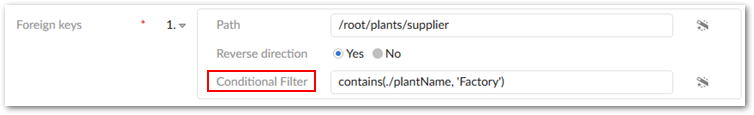
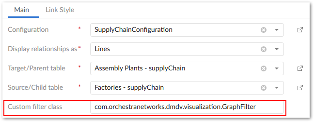

Filtering data values
You can filter values and relationships from data value graphs using an XPath expression, or a programmatic filter implemented in a Java class. The points below describe behavior, advantages and drawbacks to each:
Programmatic filter: When a programmatic filter is used, its logic applies to all foreign keys defined in the link configuration. These types of filters can be very powerful as they allow you to filter links based on individual start and end nodes, any related nodes, or nodes between the start and end node path. The difficulty in using a programmatic filter mainly lies in its implementation, as this requires knowledge of Java. These types of filters can also negatively impact performance in large graphs.
XPath filter: An XPath filter can be configured and applied to individual foreign keys in a link configuration. These types of filters provide the convenience of configuration via the UI and not requiring programming knowledge to configure. However, there are limits to the available functions and operators.
The following demonstrates how to add each type of filter to a link configuration and the outcome of doing so:
Add an XPath expression to a link configuration's Path property. If conditions in a generated graph satisfy the expression, the add-on removes the corresponding nodes. As shown in the following image, you can use the Conditional Filter property to define an XPath filter:

Note
The add-on only supports XPath for fields on the target table, or a combination of the target and current tables. You cannot use the current table only. Additionally, the add-on validates the XPath statement when saving the record and blocks the save action if the statement is invalid.
Add a programmatic filter that applies to all paths defined in a link configuration. See the Filtering data values and relationships section for sample code to help you get started. Once you've implemented the custom filter class, enter the fully qualified name in the Custom filter class field (shown below).

For demonstration purposes, both filters described above remove the same values from the graph. The image below shows the result of applying the filters: